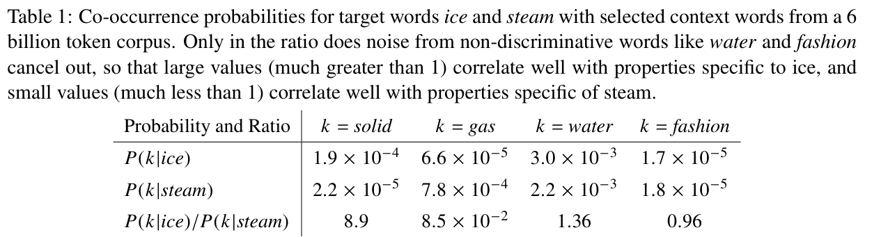
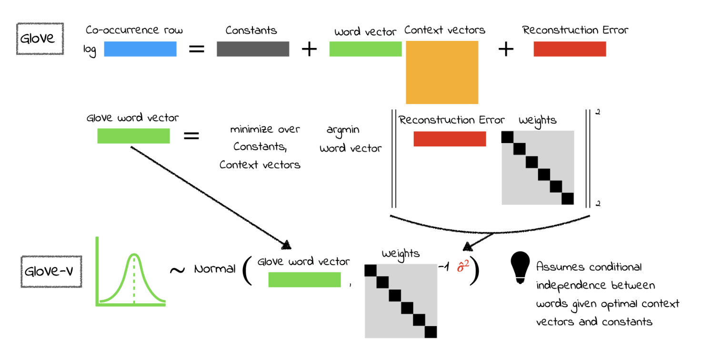
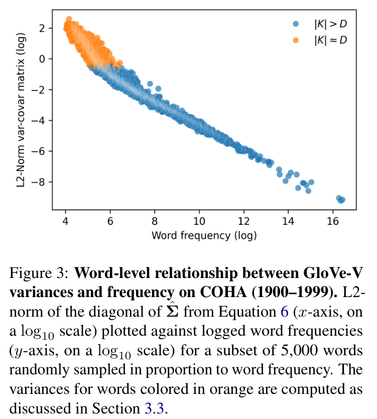
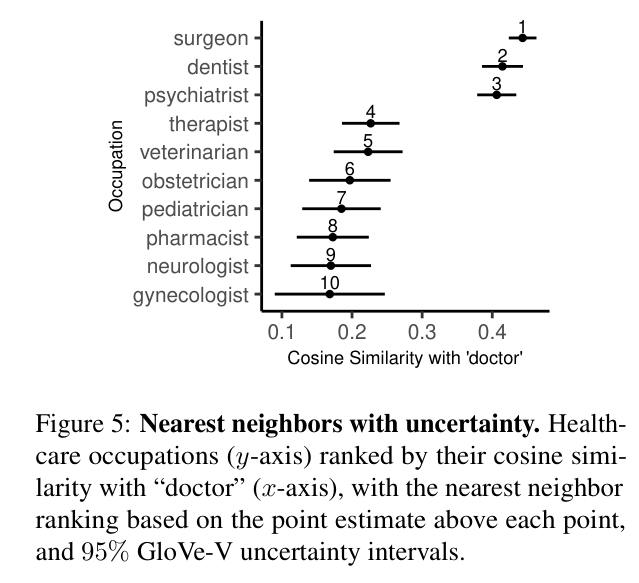
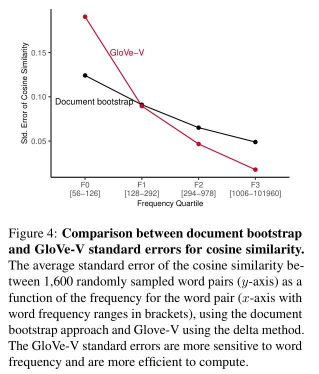
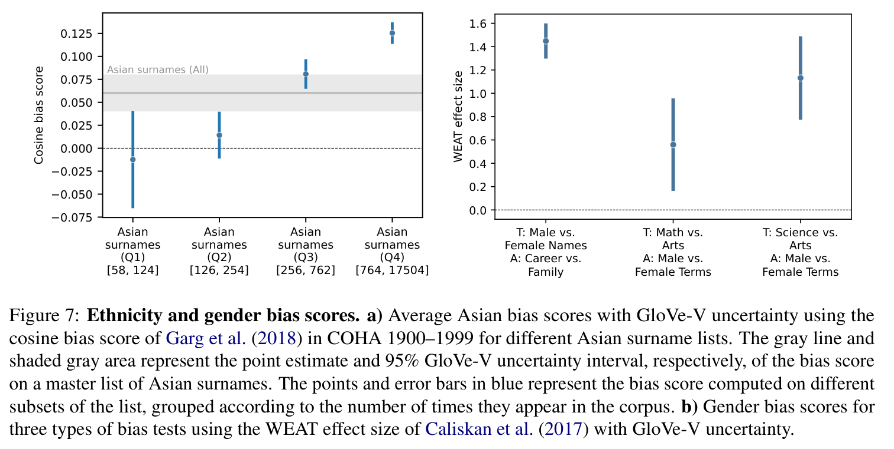

Nation-scale reading club session 6
Jonas Skjold Raaschou-Pedersen
2025-01-07
Uncertainty Embeddings
- Standard practice to conduct statistical inference in the social and natural sciences
- Vast majority of applications rely exclusively on point estimates of embeddings, ignoring uncertainty
- Key insight: GloVe word embeddings are the optimal parameters for a multivariate normal probability model (using some clever tricks)
- This yields a normality result for the embeddings
- E.g. confidence bands in figure!
- Under reasonable assumptions, computationally tractable even on large vocabularies
Word vectors
- Word analogies cf. Mikolov et. al. 2013a
- predict context based on word or vice versa (local context window methods)
- Motivated by limitations of global matrix factorization methods and context window methods
- Global matrix factorization
- efficiently leverage statistical information but perform poorly on word analogy task
- Context window methods
- poorly utilize the statistics of the corpus; they train on separate local context windows instead of on global co-occurrence counts.
- GloVe
- uses a weighted least squares model that trains on global word-word co-occurrence counts and makes efficient use of statistics
- moreover constructs vector space with meaningful substructure (state-of-the-art performance back then on word analogy task, beating Word2Vec)
GloVe from first principles
- Let \(\mathbf{X}\) be the matrix of word-word co-occurence counts; \(\mathbf{X}_{ij}\) is the number of times word \(j\) occurs in the context of word \(i\); \(\mathbf{X}_{i} = \sum_{k} \mathbf{X}_{ik}\) be the number of times any word appears in the context of \(i\).
- \(P_{ij} = P(j \mid i) = \mathbf{X}_{ij}/\mathbf{X}_{i}\) the probability that word \(j\) appear in the context of \(i\).
- Thermodynamic phase with \(i = ice\) and \(j = steam\); ratio of their co-occurrence probabilities with various probe words, \(k\)
- Words related to ice but not steam: ratio \(P_{ik}/P_{jk}\) high.
- Words related to steam but not ice ratio \(P_{ik}/P_{jk}\) small.
- Words not releated to either or related to both \(P_{ik}/P_{jk} \approx 1\) .

GloVe from first principles
- The ratio is better able to distinguish relevant words from irrelevant words and it is also better able to discriminate between the two relevant words.
- Above argument suggests starting point for word vector learning should be with ratios of co-occurrence probabilities.
- Most general form \[\begin{align*}
F(w_{i}, w_{j}, \tilde{w}_{k}) = \frac{P_{ik}}{P_{jk}}
\end{align*}\] where \(w_{i}, w_{j} \in \mathbb{R}^{D}\) are word vectors and \(\tilde{w}_{k} \in \mathbb{R}^{D}\) is a context vector.
- Want to restrict the form of \(F\).
- First, we want \(F\) to represent the information in the ratio in a vector space; a linear structure, which suggests we can use the difference of the target words \[\begin{align*}
F(w_{i} - w_{j}, \tilde{w}_{k}) = \frac{P_{ik}}{P_{jk}}
\end{align*}\]
GloVe from first principles
- LHS input arguments are vectors but RHS is a scalar; take dot product to preserve linear structure (instead of e.g. neural network): \[\begin{align*}
F((w_{i} - w_{j})^{T}\tilde{w}_{k}) = \frac{P_{ik}}{P_{jk}}
\end{align*}\]
- For word-word co-occurrence matrices, the distinction between a word and a context word is arbitrary; can exchange the two roles freely i.e. \(w \leftrightarrow \tilde{w}\) and \(\mathbf{X} \leftrightarrow \mathbf{X}^{T}\).
- This symmetry can be enforced by requiring \(F\) to be a homomorphism (see here and here for two learning souls that came before us) between the two groups \((\mathbb{R}, +)\) and \((\mathbb{R}_{>0}, \times)\):
\[\begin{align*}
F((w_{i} - w_{j})^{T}\tilde{w}_{k})
=
\frac{
F(w_{i}^{T}\tilde{w}_{k})
}{
F(w_{j}^{T}\tilde{w}_{k})
}
\end{align*}\]
GloVe from first principles
- Previous results suggests \[\begin{align*}
F(w_{i}^{T}\tilde{w}_{k}) = P_{ik} = \frac{\mathbf{X}_{ik}}{\mathbf{X}_{i}}
\end{align*}\]
- The solution is \(F = \exp\), thus \[\begin{align*}
w_{i}^{T}\tilde{w}_{k} = \log \mathbf{X}_{ik} - \log\mathbf{X}_{i}
\end{align*}\]
- This expression would be symmetric if not for \(\log\mathbf{X}_{i}\); absorbing this into a bias \(b_{i}\) for \(w_{i}\) and adding a bias \(\tilde{b}_{k}\) for \(\tilde{w}_{k}\) restores the symmetry: \[\begin{align*}
w_{i}^{T}\tilde{w}_{k} + b_{i} + \tilde{b}_{k} = \log \mathbf{X}_{ik}
\end{align*}\]
GloVe from first principles
\[\begin{align*}
\log \mathbf{X}_{ik} = w_{i}^{T}\tilde{w}_{k} + b_{i} + \tilde{b}_{k}
\end{align*}\]
- We would like not to weigh all co-occurrences equally; i.e. those that happen rarely or never should not have the same weight as those that happen frequently. This can be achieved by weighting the squared error term in resulting cost function: \[\begin{align*}
J = \sum_{i=1}^{V} \sum_{j=1}^{V} f(\mathbf{X}_{ij})
\{w_{i}^{T}\tilde{w}_{j} + b_{i} + \tilde{b}_{j} - \log \mathbf{X}_{ij}\}^{2}
\end{align*}\] where \(V\) is the vocabulary size.
- This is the GloVe cost/loss/criterion function derived from first principles; the parameters are estimated by stochastic gradient descent.
- Interestingly, the paper shows how starting from the skip-gram model and improving on its limitations leads to a model that is equivalent to GloVe.
GloVe from first principles
- The general weighting function (fractional power law) equals \[\begin{align*}
f(x) = \begin{cases}
(x / x_{max})^{\alpha} & x < x_{max} \\
1 & \text{otherwise}
\end{cases}
\end{align*}\]
- The one found to performs best empirically equals: \[\begin{align*}
f(x) = \begin{cases}
(x / 100)^{3/4} & x < 100 \\
1 & \text{otherwise}
\end{cases}
\end{align*}\]
GloVe-V
- The GloVe-V model builds upon the GloVe
- We just saw that the GloVe word embedding model learns two embeddings \(\mathbf{w}_{k},
\mathbf{v}_{k} \in \mathbb{R}^{D}\) for each word \(k\), by minimizing the cost function \[\begin{align}
J = \sum_{i=1}^{V} \sum_{j=1}^{V} f(\mathbf{X}_{ij})
\{\mathbf{w}_{i}^{T}\mathbf{v}_{j} + b_{i} + c_{j} - \log
\mathbf{X}_{ij}\}^{2}
\end{align}\] where \(b_{i}\) and \(c_{j}\) are constant terms associated with word \(i\) and \(j\), \(f(\mathbf{X}_{ij})\) is a non-negative weighting function
- Note: slight change of notation from here; embedding vectors in boldface and \(c_j = \tilde{b}_j\)
- The embedding of interest in the GloVe-V paper is \(\mathbf{w}_{k}\); soon to be justified
- The original paper suggested to add the two embeddings to get the final embedding
GloVe-V
- Minimizing the cost function corresponds to estimating the model by weighted least squares (WLS).
- The key insight of the paper is that this optimization problem can be cast as an element-wise weighted low-rank approximation problem and solved in two-step fashion. Write it first in matrix form: \[\begin{align*}
& \min_{\mathbf{b}, \mathbf{c}, \mathbf{W}, \mathbf{V}} \ \Vert \mathbf{F}
\odot \mathbf{R} \Vert_{F} \\
& s.t.
\ \mathbf{R} = \log \mathbf{X} - \mathbf{W}^{T}\mathbf{V} -
\mathbf{v}\mathbf{1}^{T} - \mathbf{1}\mathbf{c}^{T}
\wedge
\mathrm{rank}(\mathbf{W}), \ \mathrm{rank}(\mathbf{V}) \leq D
\end{align*}\] where \(\mathbf{F}_{ij} = \sqrt{f(\mathbf{X}_{ij})}\), \(\mathbf{w}_{i}\) and \(\mathbf{v}_{i}\) are the \(i\)th column vectors of \(\mathbf{W}\) and \(\mathbf{V}\), and \(b_{i}\) and \(c_{i}\) are the \(i\)th elements of \(\mathbf{b}\) and \(\mathbf{c}\), and \(\odot\) denotes the element-wise product and \(\Vert \mathbf{X} \Vert_{F} = \sqrt{\sum_{i=1}^{V}\sum_{j=1}^{V}|\mathbf{X}_{ij}|^{2}}\) is the Frobenius matrix norm.
GloVe-V
- This can be solved in a two-step fashion as \[\begin{align*}
\min_{
\mathbf{b} \in \mathbb{R}^{V},
\mathbf{c} \in \mathbb{R}^{V},
\mathbf{V} \in \mathbb{R}^{V \times D}
}
\min_{\mathbf{W} \in \mathbb{R}^{V \times D}}
\ \Vert \mathbf{F}
\odot \mathbf{R} \Vert_{F}.
\end{align*}\]
- Here comes the first trick: we can hold the choice of \((\mathbf{b},
\mathbf{c}, \mathbf{V})\) fixed at their globally optimal values \((\mathbf{b}^{*}, \mathbf{c}^{*}, \mathbf{V}^{*})\) and solve the inner minimization problem to find the optimal \(\mathbf{W}\) (matrix of center vectors; embeddings of interest!).
- This corresponds to solving \(V\) weighted least squares problems with solution: \[\begin{align*}
\mathbf{w}_{i}^{*} =
(
\mathbf{V}_{\mathcal{K}}^{*T}\mathbf{D}_{\mathcal{K}}
\mathbf{V}_{\mathcal{K}}^{*}
)^{-1}
\mathbf{V}_{\mathcal{K}}^{*T}
\mathbf{D}_{\mathcal{K}}
\{\log \mathbf{x}_{i} - b^{*}_{i} \mathbf{1} - \mathbf{c}^{*}\}
\end{align*}\] where \(\mathcal{K}\) is the set of columns indices with non-zero co-occurences for word \(i\), \(\mathbf{V}_{\mathcal{K}}^{*}\) is a matrix whose columns belong to the set \(\{\mathbf{v}_{j}^{*} \mid j \in \mathcal{K}\}\), \(\mathbf{D}_{\mathcal{K}} = \mathrm{diag}(\{\mathbf{F}_{ij}^{2} \mid j \in \mathcal{K}\})\), and \(\mathbf{x}_{i}\) is the \(i\)th row of the co-occurence matrix \(\mathbf{X}\).
- To the ’metricians; compare \(\mathbf{w}_{i}^{*}\) with the usual WLS solution \(\hat{\boldsymbol{\beta}} = (X^{T}WX)^{-1}X^{T}W \mathbf{y}\).
GloVe-V
- Here comes the second trick: we can write down the probabilistic model for which \(\mathbf{w}_{i}^{*}\) is optimal.
- The WLS projection screams a normal model!
- Conditional on the optimal context vector subspace spanned by \(\mathbf{V}^{*}\) and optimal constant vectors \((\mathbf{b}^{*}, \mathbf{c}^{*})\) the model is a weighted multivariate normal model for the rows of \(\mathbf{X}\): \[\begin{align*}
\log \mathbf{x}_{i} = b^{*}_{i} \mathbf{1} + \mathbf{c}^{*}
\mathbf{w}_{i}^{T} \mathbf{V}_{\mathcal{K}}^{*} + \mathbf{e}_{i},
\ \mathbf{e}_{i} \sim N(\mathbf{0},
\mathbf{D}_{\mathcal{K}}^{-1}\sigma_{i}^{2}).
\end{align*}\]
- Because \(\mathbf{X}_{ij} > 0\) for \(j \in \mathcal{K}\) we always have \((\mathbf{D}_{\mathcal{K}})_{ii} > 0\) so the inverse makes sense.
- An assumption made is that the rows of \(\log \mathbf{X}\) are independent given the the optimal parameters \[\begin{align*}
\log \mathbf{x}_{i} \mid
\mathbf{b}^{*}, \mathbf{c}^{*}, \mathbf{V}_{\mathcal{K}}^{*}
\perp\!\!\!\perp
\log \mathbf{x}_{j} \mid
\mathbf{b}^{*}, \mathbf{c}^{*}, \mathbf{V}_{\mathcal{K}}^{*}
\text{ for all } i \neq j.
\end{align*}\] This corresponds to a random sampling assumption for a weighted normal model in a (classical) statistics setting; (I’ll buy it; just give me embedding standard errors 🚀)
GloVe-V
- Finally, under standard assumptions for WLS estimators, the covariance matrix for \(\mathbf{W}\) simplifies into a \(VD \times VD\) block diagonal matrix with \(i\)th \(D \times D\) block equal to \[\begin{align*}
\boldsymbol{\Sigma}_{i} = \sigma^{2}_{i} \left( \sum_{j \in \mathcal{K}}
f(\mathbf{X}_{ij}) \mathbf{v}_{j}^{*}(\mathbf{v}_{j}^{*})^{T} \right)^{-1}
\end{align*}\]
- The reconstruction error for word \(i\), \(\sigma_{i}^{2}\), can be estimated with the plug-in estimator: \[\begin{align*}
\hat{\sigma}^{2}_{i} =
\frac{1}{|\mathcal{K}| - D}
\sum_{j \in \mathcal{K}}
f(\mathbf{X}_{ij})
\left(
\log \mathbf{X}_{ij} - b^{*}_{i} - c^{*}_{j}
- \mathbf{w}_{i}^{*T} \mathbf{v}_{j}^{*}
\right)^{2}.
\end{align*}\] Note that this is only valid for \(|\mathcal{K}| > D\); i.e. for words that co-occur with a greater number of unique context words (\(|\mathcal{K}|\)) than the dimensionality of the vectors (\(D\)).
GloVe-V
Conclusively, we have the result for word \(i\) \[\begin{align*}
\widehat{\mathbf{w}}_{i} \sim
N\left(
\mathbf{w}_{i},
V^{-1}\widehat{\mathbf{\Sigma}}_{i}
\right)
\iff
\sqrt{V}\left(\widehat{\mathbf{w}}_{i} - \mathbf{w}_{i}\right)
\sim
N\left(\mathbf{0}, \widehat{\mathbf{\Sigma}}_{i}\right)
\end{align*}\] and for the full matrix of embeddings \[\begin{align*}
\sqrt{V}\left(\widehat{\mathbf{W}} - \mathbf{W}\right)
\sim
N\left(\mathbf{0}, \widehat{\mathbf{\Sigma}}\right).
\end{align*}\]
With this we can conduct inference on the embeddings; e.g. hypothesis tests and comply with the standard practice in the social and natural sciences :=)
Overview
- To estimate GloVe-V model we estimate usual GloVe model and then estimate the variance using the plug-in estimator and the formula for the covariance

Word frequency and variance size
- Method conforms with the intuition that we should be less certain about a word’s position in vector space the less data we have on its co-occurrences in the raw text

Nearest neighbors with uncertainty
- Method yields confidence bands for the cosine similarities computed in the figure

- Wait a second, how is it actually computed?
Warm-up: Cosine similarity
- Given embedding vectors \(\mathbf{x}, \mathbf{y} \in \mathbb{R}^{D}\) with angle \(\theta\) between them, the cosine similarity, \(\mathrm{cos}(\mathbf{x}, \mathbf{y}) \in [-1, 1]\), is defined as \[\begin{align}
\mathrm{cos}(\mathbf{x}, \mathbf{y}) :=
\mathrm{cos}(\theta)
= \frac{\mathbf{x}^{T}\mathbf{y}}{\Vert \mathbf{x} \Vert \Vert \mathbf{y} \Vert},
\end{align}\] where the norm \(\Vert \mathbf{x} \Vert = \sqrt{\sum_{i=1}^{D} x_{i}^{2}}\).
- The derivative of the cosine similarity with respect to \(\mathbf{x}\) is \[\begin{align}
\nonumber
\frac{\partial}{\partial \mathbf{x}} \mathrm{cos}(\mathbf{x}, \mathbf{y})
& =
\frac{1}{\Vert \mathbf{x} \Vert \Vert \mathbf{y} \Vert}
\frac{\partial}{\partial \mathbf{x}}\mathbf{x}^{T}\mathbf{y}
- \frac{\mathrm{cos}(\mathbf{x}, \mathbf{y}) }{\Vert \mathbf{x}\Vert} \cdot
\frac{\partial \Vert \mathbf{x} \Vert}{\partial \mathbf{x}}
\\
& =
\label{eq:cosine-derivative}
\frac{1}{\Vert \mathbf{x} \Vert \Vert \mathbf{y} \Vert} \mathbf{y}
- \frac{\mathrm{cos}(\mathbf{x}, \mathbf{y}) }{\Vert \mathbf{x}\Vert} \cdot
\frac{\partial \Vert \mathbf{x} \Vert}{\partial \mathbf{x}}
\end{align}\] Note that the derivative \(\frac{\partial}{\partial \mathbf{x}} \mathrm{cos}(\mathbf{x}, \mathbf{y})\) is \(D \times 1\) dimensional (we take is as a column vector).
Delta method
The Delta Method states that if \(\sqrt{V}\left(\widehat{\mathbf{W}} - \mathbf{W}\right)\) converges to \(N\left( \mathbf{0}, \widehat{\mathbf{\Sigma}} \right)\), then for \(\phi(\cdot)\) a differentiable function of \(\mathbf{W}\) it holds \[\begin{align*}
\sqrt{V}(\phi(\widehat{\mathbf{W}}) - \phi(\mathbf{W}))
\sim N(
\mathbf{0},
\phi^{\prime}(\widehat{\mathbf{W}})^T
\widehat{\mathbf{\Sigma}}
\phi^{\prime}(\widehat{\mathbf{W}})
)
\end{align*}\] where \(\phi^{\prime}(\cdot)\) is its gradient with respect to \(\mathbf{W}\).
The cosine similarity is a transformation of the estimated embedding matrix \(\widehat{\mathbf{W}}\) i.e. \[\begin{align*}
\phi(\widehat{\mathbf{W}})
=
\mathrm{cos}(\hat{\mathbf{w}}_{j}, \hat{\mathbf{w}}_{k})
\end{align*}\]
Defining \(\mathbf{d}_{j} := \frac{\partial}{\partial \mathbf{w}_{j}} \mathrm{cos}(\hat{\mathbf{w}}_{j}, \hat{\mathbf{w}}_{k})\) the variance of \(\phi(\widehat{\mathbf{W}})\) equals
\[\begin{align*}
\mathrm{var}\{\phi(\widehat{\mathbf{W}})\}
=
\phi^{\prime}(\widehat{\mathbf{W}})^T
\widehat{\mathbf{\Sigma}}
\phi^{\prime}(\widehat{\mathbf{W}})
=
\sum_{i \in \{j, k\}}
\mathbf{d}_{i}^{T}
\widehat{\mathbf{\Sigma}_{i}}
\mathbf{d}_{i}
\end{align*}\]
Delta method continuned
- Thus, we have the distributional result: \[\begin{align*}
\mathrm{cos}(\hat{\mathbf{w}}_{j}, \hat{\mathbf{w}}_{k})
\sim N\left(
\mathrm{cos}(\mathbf{w}_{j}, \mathbf{w}_{k}),
V^{-1}
\mathrm{var}(\mathrm{cos}(\hat{\mathbf{w}}_{j}, \hat{\mathbf{w}}_{k}))
\right)
\end{align*}\]
- With this we can conduct inference, e.g. \(t\)-test as \[\begin{align*}
t_{
\mathrm{cos}(\mathbf{w}_{j}, \mathbf{w}_{k}) = \mu
}
:=
\frac{
\mathrm{cos}(\hat{\mathbf{w}}_{j}, \hat{\mathbf{w}}_{k})
- \mu
}{
\mathrm{se}(\mathrm{cos}(\hat{\mathbf{w}}_{j}, \hat{\mathbf{w}}_{k}))
}.
\end{align*}\] and confidence intervals as \[\begin{align*}
\mathrm{cos}(\hat{\mathbf{w}}_{j}, \hat{\mathbf{w}}_{k})
\pm
z_{1-\alpha/2}
\mathrm{se}(\mathrm{cos}(\hat{\mathbf{w}}_{j}, \hat{\mathbf{w}}_{k}))
\end{align*}\]
Nearest neighbors with uncertainty
For the top three neighbors (and between neighbours 4 through 10), cannot statistically distinguish the ranks (e.g., p = 0.10 for the difference in the cosine similarity of “doctor” and “surgeon” relative to that of “doctor” and “dentist”)
Which neighbor is the “nearest” is therefore subject to considerable uncertainty that would be invisible without incorporation of the GloVe-V variances.
GloVe-V vs ad-hoc document bootstrap

Gender bias uncertainty
Using GloVe-V, low and high frequency words can be seamlessly combined into a single bias interval that represents the combined uncertainty in all the estimated word positions (shown as a gray interval on the plot), without having to drop any surnames and sacrifice generalizability

Gender bias uncertainty
The GloVe-V intervals allow us to reject the null that (a) is equal to (b) (p < 0.001), but not the null that (a) is equal to (c) (p = 0.11). In this case, the GloVe-V intervals guard against making unsubstantiated claims about which types of bias are strongest.
Limitations
- The variances can only be computed for words whose number of context words exceeds the embedding dimensionality
- Researchers need access to the cooccurrence matrix if they wish to compute the variances themselves, since it relies on an empirical estimate of the reconstruction error.
- The methodology in this paper applies solely to the GloVe embedding model
- Finally, the uncertainty captured by GloVe-V intervals is due to sparsity in the underlying cooccurrence matrix, which is only one of many types of uncertainty one could consider in embedded locations for words. Other types of uncertainty that are held fixed in GloVe-V include
- instability due to the documents included in the corpus
- uncertainty due to the hyper-parameters of the model
- statistical uncertainty in the estimated context vector positions and bias terms, which are treated as constants in the variance computation for computational tractability.
Conclusion
The GloVe-V variances provide researchers with the ability to easily propagate uncertainty in the word embeddings to downstream test statistics of interest, such as word similarity metrics that are used in both evaluation and analyses involving word embeddings.
Finally, while outside the scope of the current study, we note that the contextual word and passage representations of transformer large language models are also point estimates and similar questions of embedding uncertainty apply when using such models as well.
{kind=link}